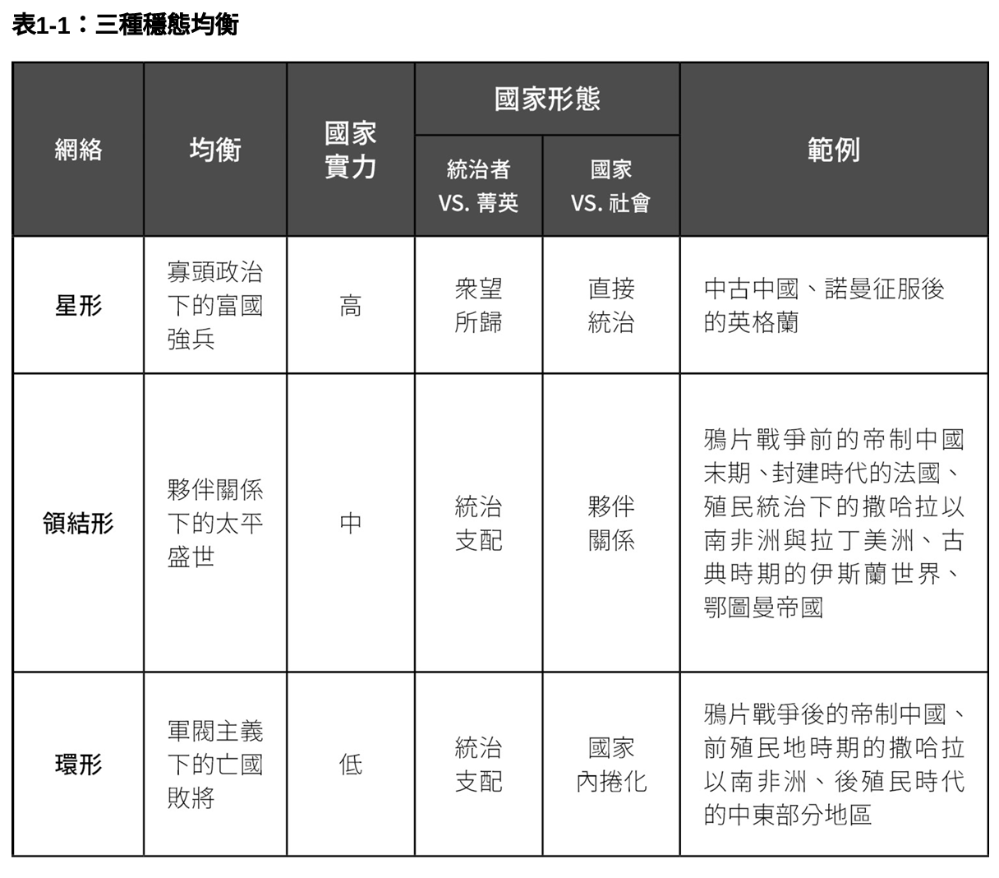

Chapter 2 精英的社会地貌与国家发展
2.1 并非条条大路通罗马
国家是人类历史上最强大的组织，作为组织的国家经过了形态上多重转变，成为我们生存不可或缺的制度
国家如何形成？欧洲的思路：罗马帝国之后，政治分裂导致国家竞争冲突。统治者与精英的谈判能力较弱，逐渐形成代议制机构以限制统治者权力。 国家间频繁战争有利于辽阔帝国，这些国家逐渐实现权力的中央化。
代议制机构，有效课税，垄断暴力，成为评估全球国家的普遍标准
2.2 为什么是中国
中国代表了另一种国家发展模式，第二个千年的时候出现了一种持久永续的和平。中国没有代议制机构，统治者任期却很长久，为什么？
与此同时，国家财政能力却在逐渐下降，为什么国力下降的时候还能维持统治？
为什么在位时间短暂的皇帝统治了强大的国家，在位时间长的皇帝统治着脆弱的国家？
2.3 需要说明的重点
马克思、魏复古的静态解释：洪水灌溉形成的东方国家，过于集权也过于强大，注定要失败
意识形态的静态解释：儒家学说正当化了帝国统治，并为中国创造了两千年的超稳定均衡结构
历史学家的解释：朝代循环。每个朝代都是由强力统治者打造，后续的统治者越来越弱，最终失去天命，这种解释忽略了不同朝代的特殊性
近年来学界的研究放在国家形成的开始和结束——秦朝和清朝，忽视了中间的过程性因素
何为国家发展：国家实力与国家形态演变的一个互动过程。国家实力：国家达成官方目标的能力。国家形态：统治者与精英的关系（领导还是支配）+国家与社会的关系（领导还是合作）
2.4 研究论点
强调精英的社会地貌：中央精英与地方社会团体连接的方式
当精英处在地域广阔紧密连接的网络中，他们倾向于选择建设强大的国家以保护自己的利益，他们的凝聚力也会限制统治者的权力
当精英依赖地方权力基础，联系不怎么紧密时，他们的凝聚力会限制统治者的权力，他们之间的分歧也让统治者可以采取分化的措施
这是一个二难选择
2.4.1 精英的社会地貌
2.4.2 国家实力
中央精英的主要兴趣是为与他有连接的社会团体提供服务
通过各种治理结构来提供这种服务，比如公共秩序机构（国家），或私有秩序机构（部落氏族）
提供的服务：保卫，对抗天灾，公平正义
2.4.2.1 精英的选择
经济性考量：规模经济使得公共秩序机构提供的保护比私有秩序机构的保护更为成本低廉
在环形网络中，中央精英并未与任何社会团体连接，失去了对社会的控制，他们不得不允许地方精英通过私人秩序机构提供服务
社会性考量：特定社会团体缴纳的税款会被转移支付，就会产生区域分歧与分配冲突
在星型网络中，可以激励精英超越地方利益，关注整体国家的利益，组成国家建设联盟。泛容利益团体产生交叉压力激励国家建设
在领结型网络中，社会网络反而强化了地域分歧，地方精英反对强化中央的政策，因为这样会削弱他们的权力基础。狭隘利益团体
在环型网络中，中央精英既不关心地方分歧，也无法使特定地方的精英团结起来
2.4.3 国家形态
2.4.4 三种均衡
每一组网络都形成了稳态均衡，在没有外生冲击的情况下，两组行为者维持当前稳定状态最符合他们的利益
存在统治者的二难困境
外生冲击可以让统治者重塑精英的社会地貌，让四分五裂的精英损害国家实力，却能加强专制权力
在星型网络中，精英动员地方资源来强化国家（寡头政治下的富国强兵）
在领结型网络中，精英希望将国家职能授予他们所属的社会团体，但精英仍然希望维持一个国家，以抵抗大规模自然灾害等
在环型网络中，精英为自己的社会团体保存资源，不再愿意建设国家


2.5 知识的传承
现代社会科学对国家的研究，有三种传统：多元主义者（社会中心的观点，将国家视为不同阶级争夺权力的竞技场）；找回国家（将国家视为不受社会影响的行为者）；社会中的国家（将国家与社会视为相互竞争的力量）
如何在这三种视点上推进这项研究？
2.5.1 社会中心论
二战后，行为主义革命，以社会中心的观点来解释政府活动
国家并非独立行为者，是社会团体竞技场（多元主义者），是将投入转化为产出的器官（结构功能主义者），是阶级斗争的工具（新马克思主义者）
2.5.2 国家中心论
《找回国家》：强调国家作为组织结构或潜在行为者的角色，主张国家指定并追求目标，并不只是反应社会团体的独特诉求
认为组织上协调一致的政府官员共同体应当隔绝社会利益关系
蒂利：国家之间的竞争驱动国家建设，外部战争激励国家精英发展出中央集权的财政制度，现代化的官僚机构与常备军队
历史制度论的思路：强调关键时刻或路径依赖的重要性
另一个学术分支强调制度化的方法，关注与国家精英及其统治者的谈判交涉能力，“把人们带回国家”
2.5.3 社会中的国家
在对非洲亚洲的研究中，发现国家在建立权威时需要与强大的社会力量竞争，比如部落或氏族
很多国家在首都建立了中央政府，但是很难将触手伸到传统权威主导的偏远角落
米格代尔《强社会与弱国家》：很多第三世界国家致力于成为能够有效指定行为准则的社会团体
英国历史学者许慧文认为，中华帝国的影响范围受到士绅家庭的结构限制
2.5.4 论点的定位
建立在理性选择研究方法的能动性中心的微观基础上
韦伯认为国家是对暴力的垄断，但作者认为国家的垄断是一种选择，而非一个既定的事实。 如果政治精英与社会团体选择国家作为安全的提供者，那才能垄断。
作者不认为社会要与国家竞争，而是认为社会是一个模式化的互动网络，强调社会与国家的联系
作者认同李维说的统治者要“收入最大化”，但增加了统治者也是“生存最大化者”的补充。
作者关注将暴力冲突视为国家发展转型的驱动力，由欣策和蒂利提出，认为冲突如何形塑国家发展取决于之前的国家与社会的联系，也就是战争可能会强化或削弱国家，取决于精英社会地貌
赞同亨廷顿的观点，认为如果没有强大的机构，政治秩序与经济成就是无法相容的目标
本研究为前现代时期中国经济的衰微提供了新的见解
加州学派：历史学者彭慕真和王国斌为代表，认为学术研究应该以欧洲为中心的观点向新的方向发展，将中国视为相对欧洲崛起的另一种选择
国家与社会关系的文献，与本研究联系很密切，认为国家与社会的互动是政治发展的基本驱动力。但是分解了国家的行为者，为统治者和精英。 强调社会力量与国家的关系取决于精英社会地貌的类型。
2.6 本书的讨论范围与研究方法
7世纪-1911年
分析方法：分析性叙事，提供中国两千年国家发展的描述性说明。
对不同数据资料来源进行三角测量，很多文件在战争中摧毁了，审慎诠释发现。
用计量经济学方法并关注因果推断，将所有技术性细节都融入到附录中
历史讨论为我们提供连续的故事，实证分析法关注国家建设的关键时刻
2.7 各章内容重点
第二章概述中国的国家发展，提出疑团：为什么短命的皇帝统治的国家往往国力强大？
第三章关注唐朝，遍布全国的精英网络，建设强大的国家，关注两税法改革的影响，唐朝中其政治精英的社会网络分析
第四章关注宋朝
第五章透过宋朝看伙伴关系下的太平盛世
第六章探讨明朝，看一条鞭法的影响
第七章分析私有秩序机构如何在帝制时代末期出现
第八章分析帝制时代末期高度的中央集权
第九章以中国为基础理论，呼应非洲、拉丁美洲和中东观察到的国家建设经验，认为国家衰微是一个社会问题，无法通过官僚体系的方案来解决。 认为共产党能够在中国成功的原因就是通过社会革命改造了中国社会，为现代中国的国家形成铺平道路。